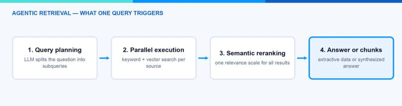
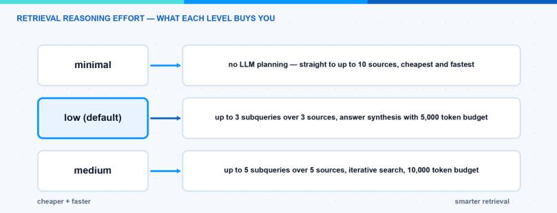
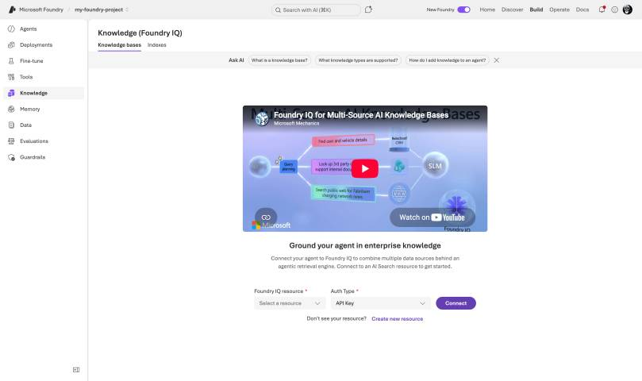
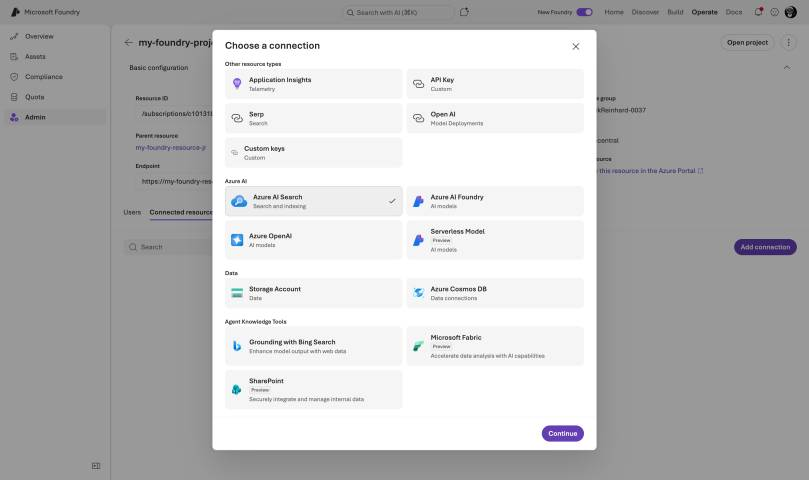
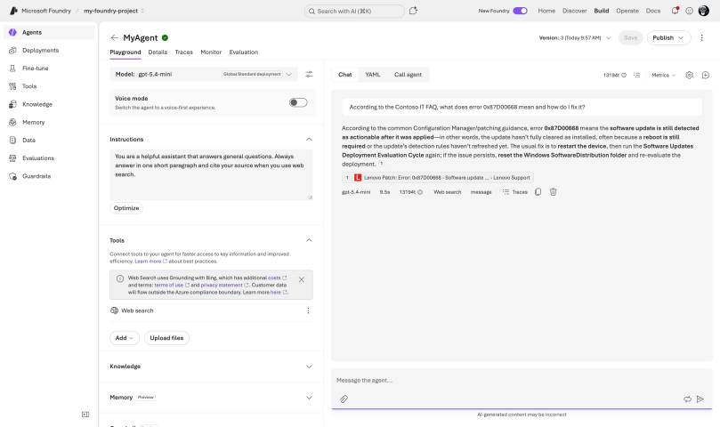

Every team that builds AI agents ends up building the same thing: a retrieval pipeline that feeds company knowledge into the agent. And most of these pipelines are built again and again, per agent, per project. Foundry IQ is Microsoft’s answer to this problem — a shared knowledge layer in Microsoft Foundry that any number of agents can plug into. In this blog post I explain how Foundry IQ works under the hood, how you create a knowledge base and wire it into an agent, and where the limits are. At the end you can decide if it should replace your custom RAG setup.
What Is Foundry IQ?
Foundry IQ was announced at Ignite 2025, together with the rebranding from Azure AI Foundry to Microsoft Foundry. The official definition is a managed knowledge layer that turns enterprise data into reusable, permission-aware knowledge bases for AI agents.
The building blocks are simple:
- A knowledge source is a connection to data — a blob container, a website, a SharePoint site, a Fabric lakehouse.
- A knowledge base bundles one or more knowledge sources plus the parameters that control retrieval. One knowledge base can hold up to 10 sources.
- Agents query the knowledge base through agentic retrieval, and multiple agents can share the same knowledge base.
One important thing to understand: Foundry IQ is built on top of Azure AI Search. The knowledge base is an object that lives on your search service. So you are not choosing between Foundry IQ and Azure AI Search — Foundry IQ is the new front door to it.
Honesty about the status, because it matters for planning: parts of this are generally available through the Azure AI Search REST API version 2026-04-01, but the good parts — answer synthesis, higher reasoning effort, several source kinds — still need the 2026-05-01-preview API. The Foundry portal and Azure portal experiences are preview across the board.
Note: Microsoft ships three “IQs”: Work IQ (Microsoft 365 signals), Fabric IQ (semantic data layer) and Foundry IQ (enterprise knowledge for agents). They are separate products. Copilot knowledge sources and Foundry IQ knowledge sources are not interchangeable.
Which Knowledge Sources Can I Use?
There are twelve kinds in two classes, and the difference matters for architecture decisions.
Indexed sources are ingested into a search index on your service. Azure AI Search chunks the content, vectorizes it and keeps it fresh with an indexer schedule. Generally available in the 2026-04-01 API: existing search indexes, Azure Blob Storage and OneLake lakehouses. In preview: Azure SQL, direct file upload and indexed SharePoint.
Remote sources are not ingested at all. They are queried live at retrieval time. Web (Bing grounding) is the GA one here. The most interesting one is remote SharePoint (preview): it goes through the Copilot Retrieval API, the content never leaves SharePoint, and SharePoint enforces the user permissions at query time. The catch: end users need a Microsoft 365 Copilot license. Also remote and in preview: Fabric data agents, Fabric ontology, MCP servers and Work IQ.
For a blob knowledge source, Azure AI Search generates the whole ingestion pipeline for you — data source, skillset, index and indexer. You can set the embedding model (for example text-embedding-3-large), a chat model for image verbalization, and an ingestion schedule. This alone removes a lot of plumbing code that I used to write by hand.
Hint: You can pin a source with alwaysQuery: true so it is searched on every retrieval, and the retrievalInstructions text on the knowledge base steers which source the planner picks for which kind of question. Write it like you would explain it to a colleague.
How Does Agentic Retrieval Work?
This is the part that makes Foundry IQ more than a nicer API around vector search. When an agent sends a question, the agentic retrieval engine runs a small pipeline:
- Query planning. An LLM breaks the question into focused subqueries. It uses the conversation history, fixes typos and decides which knowledge sources to query.
- Parallel execution. The subqueries run at the same time, each as keyword, vector or hybrid search.
- Semantic reranking. Every result set goes through the semantic ranker, so results from different sources end up on one relevance scale.
- Output. You either get the reranked chunks with citations (extractive mode) or a synthesized answer written by an LLM.

How much of this pipeline runs is controlled by the retrieval reasoning effort:
- minimal — no LLM at all. Your query goes straight to the sources as text and vector search. Cheapest and fastest, but no query planning and no answer synthesis.
- low (the default) — a single pass of LLM query planning with parallel subqueries, and answer synthesis with a budget of up to 5,000 answer tokens.
- medium — adds reflective search: after the first pass, a semantic classifier checks whether the results are good enough, and if not, the engine runs one retry with a revised query plan. Up to 10,000 answer tokens, available in select regions.

Microsoft claims around 36 percent higher response relevance compared to single-shot RAG. That is a vendor benchmark, so treat it with care — but the direction matches my experience: multi-query plus reranking beats one vector search almost every time the question is not trivial.
How Do I Create a Knowledge Base?
The portal path is the easiest start. I assume you have a Foundry project with a deployed chat model and some documents to ground on.
- Go to https://ai.azure.com, sign in and make sure the New Foundry toggle is on. Open your project.
- In the top menu, click on Build → Knowledge.

-
Create or connect an Azure AI Search service that supports agentic retrieval. For a PoC the free tier works, and the free monthly retrieval-token allowance keeps the experiment cheap.
-
Create a knowledge base and add your knowledge sources one at a time — for example a blob container, where the indexer pipeline with chunking and embeddings is generated for you.
- Configure the retrieval properties: reasoning effort and whether you want answer synthesis. Then test a few questions directly in the Knowledge tab; answers come back with citations.
The same thing as code, because the knowledge base is just an object on the search service (preview API):
PUT {search-url}/knowledgebases/intune-kb?api-version=2026-05-01-preview
{
"name": "intune-kb",
"knowledgeSources": [ { "name": "intune-docs-blob" } ],
"retrievalInstructions": "Use the intune-docs source for device management questions.",
"outputMode": "answerSynthesis",
"retrievalReasoningEffort": { "kind": "low" },
"models": [ { "kind": "azureOpenAI", "azureOpenAIParameters": {
"resourceUri": "https://<aoai>.openai.azure.com",
"deploymentId": "gpt-5-mini", "modelName": "gpt-5-mini" } } ]
}
Hint: The GA API version (2026-04-01) is deliberately smaller: no outputMode, no retrievalInstructions, no reasoning effort setting and no multi-turn message history — in practice that means extractive retrieval with minimal effort. Query planning with answer synthesis needs the preview API. Keep this in mind for production commitments.
How Do I Connect the Knowledge Base to an Agent?
This surprised me positively: the integration mechanism is plain MCP. Every knowledge base exposes an MCP endpoint with exactly one tool, knowledge_base_retrieve. In the Foundry portal you go to the Agents tab, open your agent and connect the knowledge base under its knowledge settings — done.
For code, two pieces of plumbing come first. The project needs a connection to the knowledge base endpoint: a project connection of category RemoteTool with authType: ProjectManagedIdentity and audience https://search.azure.com/. And the project’s managed identity needs the Search Index Data Reader role on the search service. Generic resource connections are managed under Operate → Admin → your project → Connected resources → Add connection.

Then the agent definition references the MCP endpoint (full guide):
# pip install "azure-ai-projects>=2.0.0" azure-identity (Projects 2.x - 1.x is incompatible)
from azure.identity import DefaultAzureCredential
from azure.ai.projects import AIProjectClient
from azure.ai.projects.models import PromptAgentDefinition, MCPTool
project = AIProjectClient(
endpoint="https://<resource>.ai.azure.com/api/projects/<project>",
credential=DefaultAzureCredential())
agent = project.agents.create_version(
agent_name="intune-assistant",
definition=PromptAgentDefinition(
model="gpt-5-mini",
instructions="Answer from the knowledge base and cite sources. If nothing is found, say so.",
tools=[MCPTool(
server_label="knowledge-base",
server_url="https://<search>.search.windows.net/knowledgebases/intune-kb/mcp?api-version=2026-05-01-preview",
require_approval="never",
allowed_tools=["knowledge_base_retrieve"],
project_connection_id="<remote-tool-connection-id>")]))
openai = project.get_openai_client()
resp = openai.responses.create(
input="How do I configure device categories?",
extra_body={"agent_reference": {"name": agent.name, "type": "agent_reference"}})
print(resp.output_text)
Because the interface is standard MCP, the same knowledge base also works from the Microsoft Agent Framework, Claude, LangChain or any other MCP-capable client. This is a real advantage over the old proprietary tool integrations. Note: at the time of writing this flow is Python-only (azure-ai-projects 2.x); C#, JavaScript and Java do not support it yet.

Before Foundry IQ, you attached an Azure AI Search tool (one index, single-shot query) or the file search tool (per-agent vector store) to your agent. Here is my honest comparison:
| Option | Use when | Trade-off |
|---|---|---|
| Foundry IQ knowledge base | Several sources or agents, permission-aware retrieval | Preview API for the good parts, more moving parts |
| Azure AI Search tool | One index, one agent, full query control | You build query logic and citations yourself |
| File search tool | Quick demo with a handful of files | Per-agent silo, no reuse |
For anything that has more than one data source or more than one agent, the knowledge base wins. The file search tool is now itself just a knowledge source type you can federate into a knowledge base — that tells you where this is going.
Note: If you still run the old Azure OpenAI “On Your Data” pattern (the “Add your data” button in the classic chat playground), plan your migration now: it is deprecated and retires on October 14, 2026. The official migration target is exactly this stack — Foundry Agent Service plus Foundry IQ.
What Does It Cost?
Two meters run. Azure AI Search bills retrieval tokens for subquery execution and semantic reranking — there is a free monthly token allowance, and the standard plan turns on pay-as-you-go beyond it. Azure OpenAI bills the tokens for query planning and answer synthesis on the model you assign to the knowledge base. The docs example lands at about $4.32 for 2,000 retrievals with gpt-4o-mini — in my view very reasonable for what the pipeline does.
The cost levers, in order of impact: reasoning effort, number of knowledge sources, and content organization (fewer, better-curated sources mean less fan-out). The activity log in every retrieve response shows exactly which subqueries were issued and what they consumed — that is your cost debugging tool.
The Approach I Actually Use
- Start with one blob knowledge source and let the auto-generated pipeline do chunking and vectorization. Do not hand-build a skillset first.
- Start with reasoning effort minimal and measure quality with your own evaluation set (I described my setup in how to evaluate AI agents in Microsoft Foundry). Only go to low or medium if the numbers demand it — the step to low buys query planning, the step to medium buys the retry pass.
- Use extractive mode for agents — the agent’s own model does the reasoning anyway. Answer synthesis only when retrieval output goes directly to users.
- One knowledge base per domain, not per agent. Reuse is the whole point.
Pitfalls I Now Avoid
- Doing per-user security through the agent tool. The user token is passed via the
x-ms-query-source-authorizationheader, but Foundry Agent Service applies MCP headers per agent definition, not per request. For real per-user trimming, call the Responses API directly. - Treating web sources like index sources. A web knowledge source always summarizes the web content with an LLM before it lands in your results, so the knowledge base needs a model reference even in extractive mode — and you get cited summaries, not verbatim page text. The
modelWebSummarizationentry in the activity log shows what that step consumes. - Treating the auto-generated index as editable. The blob source generates data source, skillset, index and indexer from a fixed template. Hand-editing these objects breaks the sync.
- Forgetting the knowledge base and its sources must live on the same search service. Plan capacity on one service per domain — and remember the limit of 10 sources per knowledge base when you cut your domains.
Where This Is Heading
Retrieval is becoming infrastructure. The interesting signal is that Microsoft put the whole thing behind MCP: knowledge stops being a per-platform feature and becomes an endpoint any agent can call — Foundry agents today, your Agent Framework workflows tomorrow, third-party clients the day after. If you are building agents on Microsoft Foundry, I would stop writing custom RAG pipelines now and put that energy into good knowledge sources and honest evaluations. The details live in the Foundry IQ documentation.
I hope this helps you to skip a few detours that I took.
Stay healthy,
Cheers Jannik